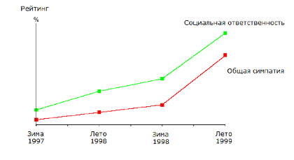

Смысл и выгоды социальной ответственности
Обзор потенциальных выгод, которые могут быть получены компаниями в результате реализации программ социальной ответственности.
Смысл и выгоды социальной ответственности
Текст подготовлен при поддержке компании "Управление PR"
Предпосылки для социальной ответственности
За последние 20 лет во взаимоотношениях между государством, гражданскими институтами и частными компаниями по всему миру произошли весьма существенные изменения. В результате процессов дерегулирования, приватизации, глобализации на первый план начали выходить принципиально новые формы общественно взаимодействия. По мере того, как правительства стран постепенно понимают, что жесткое регулирование и грабительские налоги не приводят к повышению общественного благосостояния - скорее наоборот - акценты во взаимодействии с частным сектором постепенно смещается в сторону добровольного саморегулирования. С другой стороны, частный сектор постепенно переходит от бессистемной благотворительности к более сложным, стратегическим формам взаимодействия с общественностью (public relations, PR) и правительствами (government relations, GR). Одной из таких форм являются корпоративные программы социальной ответственности (Corporate Social Responsibility).
Почему социальной ответственности уделяется такое внимание? Называют несколько причин, среди которых:
· Глобализация и связанное с ней обострение конкуренции;
· Растущие размеры и влияние компаний;
· Сокращение и репозиционирование правительств;
· "Война за талант" - конкуренция компаний за персонал;
· Рост гражданского активизма;
· Возрастающая роль нематериальных активов [в данном случае - репутации и брэндов].
Источник: Boston College Centre for Corporate Community Relations, Making the Business Case: Determining the Value of Corporate Community Involvement, 2000
Принято считать, что понятие социальной ответственности бизнеса в его современном смысле родилось на всемирном саммите 1992 года в Рио-де-Жанейро, когда ряд транснациональных компаний, объединившихся под именем Всемирный Деловой Совет по Устойчивому Развитию (World Business Council for Sustainable Development), смогли предложить программу саморегулирования, в результате чего инициативы чиновников ООН по введению законодательного регулированию не получили поддержки.
Именно начиная с 1992 года, на Западе все более широкое распространение получает точка зрения в соответствии с которой частные компании по собственной инициативе должны играть существенную роль в достижении "общественных целей" под флагом "корпоративного гражданства" (corporate citizenship). Корпорации должны вести бизнес с учетом интересов различных "заинтересованных сторон" (stakeholders), чтобы сообща достигать заявленной цели "устойчивого развития". Понятие "устойчивое развитие" в целом весьма расплывчато, считается, что у него есть три важнейших аспекта: экономический (в смысле действий компании в большем контексте локальной экономики региона), социальный и экологический. Таким образом, компании должны ставить перед собой соответствующие экономические, социальные и природоохранные цели, оценивать их выполнение и даже иметь независимое аудиторское заключение по данным вопросам - вместо того, чтобы ставить перед собой цели на уровне прибыльности и капитализации. Считается, что только действуя таким образом компании могут соответствовать "ожиданиям общества" (society's expectations), что представляется ключевым фактором долгосрочной стратегии успеха в современном мире.
Случается, что программы социальной ответственности внедряются компаниями самостоятельно в рамках программ по управлению репутацией. Однако наиболее активными пропагандистами социальной ответственности - как альтернативы жесткому регулированию - являются правительства различных уровней. В Великобритании даже есть министр социальной ответственности (в рамках департамента торговли и промышленности, http://www.dti.gov.uk/support/responsibility.htm), парламент Евросоюза в 2001 году опубликовал официальный документ (green paper) по этому вопросу, а 2005 год объявлен в Евросоюзе годом социальной ответственности.
Кроме этого, концепция социальной ответственности активно лоббируется неправительственными общественными организациями левого толка, которые вообще часто критикуют частные компании и транснациональные корпорации в особенности за пренебрежение "общественными интересами". Во многих случаях (например, в случае Shell или Nike) введение программ корпоративной ответственности следовало за волной публичной критики со стороны различного рода организованных активистов.
· Половина крупнейших мировых компаний G100 в 2000-м году представила глобальные отчеты по экологическим программам (Global Environmental Reports). 54% процента компаний G100 представила отчеты по программам социальной ответственности и корпоративного гражданства.
· В Великобритании, с 1996 по 1999 год, количество крупнейших компаний (по которым строится фондовый индекс FTSE 100), предоставляющих отчеты по корпоративным социальным программам возросло с 3 до 28.
· Опрос, проведенный в 2000 году среди 45 крупнейших европейских компаний показал, что 90 процентов из них включают в годовые отчеты информацию о миссии, ценностях, атмосфере на рабочих местах, социальных и экологических программах.
Источник: CSR Network (2000) The Global Reporters and DTI(2001) Developing corporate social responsibility in the UK, Business and Society, DTI, London.
Хотя социальная ответственность во многом остается заботой крупных транснациональных корпораций, малые и средние предприятия все чаще и чаще вовлекаются в этот процесс. Основная причина этого - этические и социальные требования к поставщикам и контракторам, которые выдвигают "социально ответственные" корпорации, внедрение соответствующего законодательства, международная стандартизация и сертификация.
В целом, для разных отраслей существуют разные поводы к началу разговоров о социальной ответственности, они кратко описаны в следующей таблице:
|
Проблемы |
Примеры |
|
Опасения существенных негативных эффектов (в особенности для потребителей, но и для сотрудников тоже) |
Фармацевтика, химическая промышленность, табачная промышленность |
|
Существенные последствия для окружающей среды при производстве и потреблении продукции |
Лесозаготовки, автомобильная промышленность, нефтедобывающая промышленность, химическая промышленность |
|
Вопросы, вызывающие большой общественный резонанс |
Добыча полезных ископаемых |
|
Большие социальные проблемы, нарушения прав человека |
Детский труд в легкой промышленности, в цепочках поставщиков |
|
Структура отрасли |
Примеры |
|
На рынке доминирует небольшое количество известных брэндов |
Пищевые продукты, спортивная одежда, нефтедобыча и нефтепереработка |
|
Высокий уровень государственного регулирование или опасности введения регулирования |
Добыча полезных ископаемых, химическая промышленность |
|
Бывшие государственные монополии и частно-общественные партнерства (public-private partnership, PPP) |
Инфраструктурные отрасли, телекоммуникации, строительство |
|
Широкомасштабное, хорошо заметное производство |
Добыча полезных ископаемых, сельское хозяйство, электроэнергетика, строительство |
|
Характеристики продукции |
Примеры |
|
Эмоционально-нагруженные продукты, связанные с идентичностью потребителя, где выбор по большому счету не определяется техническими характеристиками |
Игрушки, одежда, в т.ч. спортивная |
|
Конечный брэнд легко определяется на этапе производства |
Пищевые продукты, косметика |
|
Возможность получить конкурентное преимущество с помощью дифференциации |
Одежда, в т.ч. спортивная |
|
Существенная важность для общества |
Водоснабжение, пищевые продукты, фармацевтика |
Смысл и выгоды социальной ответственности
Несмотря на неочевидность выгод от программ социальной ответственности, ряд исследований демонстрирует, что компании, адаптирующие у себя программы такого рода получают преимущества в различных, порой самых неожиданных областях.
Операционные издержки
Начнем, однако, с относительно очевидного: инвестиции в экологически эффективные технологии (вторичная переработка, экономия энергопотребления, сокращение выбросов) часто приводят к существенному сокращению издержек.
Xerox Corporation экономит сотни миллионов долларов каждый год с помощью своих программ вторичной переработки. Дизайн продуктов таков, что позволяет их легко разбирать, вторично использовать и перерабатывать. Для 90 процентов производимой компании техники возможно повторное использование в качестве запасных частей. Источник: Cited in Buried Treasure, Sustainability, http://www.sustainability.org.uk
Корпорация 3М с 1975 по 2002 год сэкономила 894 миллиона долларов США с помощью своей программы "Предотвращение загрязнения окупается". Источник: http://www.3m.com/about3m/sustainability/policies_ehs_tradition_3p.jhtml
По сути, такие программы не являются программами социальной ответственности в полном смысле этого слова. Основная цель компаний, в данном случае, не социальная ответственность как таковая, а банальная максимизация прибыли - то, чем все разумные компании в норме и занимаются. Речь идет скорее о том, чтобы обеспечить пиар-поддержку такого рода инициативам, преподать их обществу как нечто, направленное на увеличение общественного благополучия и процветания.
Репутация и связи с общественностью
Современные программы репутационного менеджмента выросли из филантропических порывов, которые взлетели на невиданные высоты в 90-х годах, когда Билл Гейтс и Тед Тернер жертвовали буквально миллиарды долларов на благотворительность. Такие программы не являются частью основного бизнеса компании, однако могут улучшить ее репутацию и, тем самым, поднять капитализацию. Обычно, в рамках этих программ компании дарят школам компьютеры, персонал добровольно работает на социально значимых проектах, либо просто делается денежный взнос в пользу благотворительных фондов, музеев, или общественных служб. Кроме того, программы социальной ответственности часто помогают предотвратить скандалы, способные нанести ущерб репутации компании. В ситуации, когда есть человек, специально следящий за действиями компании с этой точки зрения, становится проще предотвратить и сами ошибочные действия, и их негативные последствия. Это особенно важно для фирм владеющих розничными торговыми марками с высокой стоимостью, именно они чаще всего становятся объектами нападок со стороны прессы, различного рода активистов, экологов или защитников прав потребителей. Как говорит Крис Тьюппен из компании British Telecom, "это просто вещи, которые ... берегут вас от ситуации, когда утром вы обнаруживаете имя своей компании на обложке газеты, потому что из-за ваших действий что-то случилось где-то в другой части света".
· Опрос, проведенный среди 1,000 тысячи респондентов в Великобритании в 1999 году показал, что для 41% опрошенных информация программах о социальной ответственности компании является "очень существенной" при принятии решения о покупке товара или услуги, а еще для 41% эта информация является "достаточно существенной". Для сравнения, в 1998 году эти цифры составляли 28 и 49% соответственно. Источник: Mori.com
· Анализ пресс-профиля корпорации IBM показывает, что 25% упоминаний компании связано с обсуждение деятельностью компании в рамках программ корпоративного гражданства, образовательных программ и других некоммерческих благотворительных проектов. Источник: Litow, S (2000), Corporate Citizenship Activities Supporting Reputation, IBM, June 9 2000.
Одной из отраслей, вызывающих наибольший общественный интерес - и, как следствие, интерес со стороны прессы, является добыча природных ресурсов. Проекты, связанные с добычей нефти и других полезных ископаемых являются масштабными и хорошо заметными со стороны, они оказывают серьезное (хотя и далеко не всегда негативное) влияние на окружающую среду, бывает, что эта деятельность связана с нарушением прав собственности или прав отдельных людей. Высокая стоимость рабочей силы, высокие налоги и относительная бедность месторождений в развитых странах вынуждает крупные западные компании открывать региональные отделения в странах развивающихся. Как следствие, возникает масса поводов для негативных публикаций в прессе, таких, например, как:
· Покупка концессии, возмещение за использование земли - потенциал для коррупционных скандалов;
· Аварии, утечки химикатов и тяжелых металлов, загрязнение воздуха и воды;
· Вопросы готовности к чрезвычайным ситуациям;
· Вырубка лесов, эрозия почв, нарушение экологического баланса;
· Вопросы безопасности труда;
· Нарушения прав человека;
· Социальные проблемы: рост насилия, коррупции, проституции и т.д.
К сожалению, природные месторождения не всегда расположены там, где нам хотелось бы. Часто они находятся в развивающихся странах с коррумпированными авторитарными режимами, систематически нарушающими права человека. Работая в таких странах, западные компании становятся постоянным объектом нападок со стороны западной же прессы - как поддерживающие эти недемократические правительства. Кроме того, процессы принятия решений о заключении договоров концессии таят в себе огромный потенциал для коррупционных скандалов. В случае, если месторождения находятся в совсем диких регионах, их разработка может потревожить коренных обитателей этих мест - как людей, так и животных. При этом, добывающие компании привлекают массу внимания из-за своих размеров - годовой оборот компании ExxonMobil, например, в 4 раза больше ВВП Нигерии и в 100 - Чада, стран, где ExxonMobil активно работает. А поскольку добывающие компании к тому же являются еще и вертикально-интегрированными, у них есть хорошо известные конечному потребителю торговые марки (для товаров бытовой химии, моторных масел, заправочных станций), которые и становятся объектом для атаки.
Ярчайшим примером такого рода является корпорация Shell, которая неоднократно становилась как участником разного рода скандалов - наиболее громкими из которых были, пожалуй, инцидент в Нигерии (казнь местным правительством поэта Кена Саро Вива и еще восьми человек из народа огони, протестовавших против деятельности Shell) и в Северном море (затопление платформы Брент Спар). В результате, в 1995 году менеджмент компании принял решение поправить репутацию с помощью программ социальной ответственности.
С тех пор, Shell официально заявляет о своей стратегической приверженности концепции устойчивого развития: "Далеко не являясь тормозом на пути повышения производительности, такие обязательства позволяют нам лучше понимать мир и увеличивают наши шансы на успех. Устойчивое развитие является дальновидным, воплощает понятие прогресса и способствует появлению новых интерпретаций происходящего в мире. Наш бизнес будет наилучшим образом процветать, распространяя эту концепцию и предоставляя энергию и другие продукты в соответствии с ожиданиями общества для устойчивого будущего." Источник: Mark Moody Stuart, Shell's People Planet a Profits Report, 1999. Как видим, все ключевые слова упомянуты.
Документы, публикуемые Shell в рамках ее программы устойчивого развития, демонстрируют весьма существенные усилия, которые компания прикладывает к тому, чтобы помочь местному населению в слаборазвитых странах и минимизировать ущерб окружающей среде. Даже такая анти-корпоративная организация, как Human Rights Watch, вынуждена была признать, что "стратегии развития нефтяных компаний также принесли больницы, школы и другую инфраструктуру в отдаленные регионы страны, которые в противном случае были бы значительно более маргинализированы с нынешним нигерийским правительством".
Однако, усилия служб по связям с общественностью в рекламы популяризации корпоративных программ привели к тому, что в настоящее время сложилось достаточно стойкий стереотип: "пиар и корпоративная ответственность - одно и то же". Именно в этом обвиняет Shell неправительственная организация Chirstian Aid, в своем докладе Behind the mask: the real face of social corporate responsibility ("За маской - настоящее лицо социальной ответственности"). Chirstian Aid утверждает, что корпоративные социальные программы - не более чем дешевая (или дорогая - по ситуации) реклама, далекая от настоящей ответственности, равно как и от искреннего желания помочь другим людям.
Эксперт в области программ социальной ответственности Тони Муци Фальконе утверждает, что достаточно типично для "новичков" в этой области назначать на должность ответственного за корпоративную ответственность начальника службы по связям с общественностью, а саму службу переименовывать в службу по взаимодействию с заинтересованными сторонами (stakeholder relations). По его мнению, единственное верное решение в данном случае заключается в том, чтобы назначить ответственным генерального директора - только так можно обеспечить реализацию идей социальной ответственности во всей деятельности компании. Таким образом, хотя пиар-служба играет ключевую роль в том, чтобы программа социальной ответственности действительно улучшила репутацию компании, вся компания должна правдоподобно делать вид, что это не реклама, она "по-настоящему" ответственна. (Источник: http://www.globalpr.org/news/debate/csr-13-oct-03.asp.)
Улучшение отношений с персоналом компании
Более века назад, в 1900 году в Англии случилось знаменательное событие: Сэмуэль Джонсон, основатель компании SC Johnson, добровольно предложил своим сотрудникам оплачиваемый отпуск - невиданную по тем временам роскошь. С современной точки зрения такой филантропический акт можно назвать только социальной ответственностью, хотя возможно, что самим Джонсоном двигал более меркантильный расчет. Опыт 90-х годов прошлого столетия показывает, что существует прямой эффект в виде повышения лояльности от различных нестандартных добавлений к официальному, законодательно установленному соцпакету, использование различных волонтерских программ, а также повышения репутации компании в глазах сотрудников.
В 2001-2002 компания консалтинговая компания Cone провела социлогическое исследование Corporate Citizenship Studies, опросив около 1000 работающих американцев. Результаты были следующими:
· 88% сотрудников компаний, имеющих программы социальной ответственности считают, что у них есть сильное чувство лояльности по отношению к работодателям (на 17% больше по сравнению с компаниями, не имеющими таких программ).
· 53% сотрудников компаний, имеющих программы социальной ответственности считают, что приверженность их компании высоким социальным стандартам является одной из причин, по которым они выбрали для себя работать здесь.
· 59% опрошенных при прочих равных предпочтут в качестве работодателя социально ответственную компанию (другой вопрос, что ситуация "прочих равных" практически никогда не возникает).
· 80% опрошенных утверждают, что откажутся работать на компанию, если они обнаружат, что компания "плохо себя ведет" в социальном смысле.
Источник: www.coneinc.com
В первую очередь это затрагивает компании, которые в силу специфики отрасли вынужденны нанимать высококвалифицированных, высокоинтеллектуальных и творческих сотрудников. Программы социальной ответственности в этом случае становятся частью "войны за талант", конкуренции за привлечение наиболее интересных, ярких личностей. Именно для управления таким персоналом особенно эффективны нематериальные стимулы. В случае, если сотрудники компании мотивированны по большей части деньгами, от программы вряд ли будет большая выгода.
Хотя порой случаются и обратные примеры: британская компания Elite Forwarders Ltd, специализирующаяся в области дистрибуции и складского хозяйства в момент расширения в графстве Йоркшир вступила в сотрудничество с местной благотворительной организацией West Leeds Family Learning и местным центром занятости. Компания спонсировала широко разрекламированную программу обучения для местных безработных, нанимая наиболее успешно завершивших ее. В результате:
· Было нанято 300 новых сотрудников;
· 106 из них было нанято через программу обучения;
· 46% из 106 нанятых были ранее безработными в течение более чем 12 месяцев.
Таким образом, были достигнуты несколько целей одновременно: компания улучшила свои отношения с населением и местными властями, наняла персонал и поучаствовала в сокращении безработицу в регионе.
Улучшение отношений с властями
По сути, на сегодняшний день улучшение отношений с властями (government relations, GR) остаются основой выгодой, приобретаемой компанией в рамках программ социальной ответственности. Социально ответственным компаниям намного проще вести переговоры относительно лицензий и разрешений, у них больше шансов на отмену существующего законодательного регулирования и на предотвращение введения нового регулирования. Основной смысл поддержания отношений с неправительственными организациями типа Greenpeace или Human Rights Watch заключается в том, чтобы иметь возможность в случае необходимости нейтрализовать их попытки пролоббировать очередной ограничительный закон, будь то экологические стандарты или стандарты об охране труда. В этом случае хорошим аргументом может стать тот факт, что нечто похожее уже делается добровольно, и в дальнейшем ситуация будет только улучшаться - а следовательно, нет необходимости в принуждении.
Сэр Джон Иган, генеральный директор British Airports Authority (BAA), крупнейшего приватизированного оператор аэропортов в Великобритании, считает, что отношения с общественностью прежде всего имеют смысл в контексте отношений с регуляторами: "Отрицать, что наши соседи имеют влияние в нашей компании означает не только отрицать реальность их жизни, но и их способность мешать, задерживать и даже останавливать расширения наших аэропортов".
В США, местное Агентство по защите окружающей среды в рамках своего "Проекта XL" награждает компании за "совершенство и лидерство", позволяя им несколько отступать от крайне обременительных стандартных процедур при получении экологических разрешений.
Результаты опроса, проведенного в 1998-1999 годах в Великобритании наглядно демонстрируют, кто является настоящей "целевой аудиторией" для программ социальной ответственности.
Вопрос: каковы наиболее существенные факторы, которые вы принимаете во внимание при составлении суждения о компании?
(Все цифры - в процентах, серым выделены вопросы, имеющие отношение к социальной ответственности.)
|
Простые люди |
Члены парламента (лейбористы) |
Члены парламента (консерваторы) |
Журналисты деловых газет |
Инвесторы |
|
|
Качество производимых товаров/услуг |
25 |
25 |
36 |
25 |
|
|
Качество обслуживания клиентов |
21 |
27 |
15 |
13 |
|
|
Отношение к персоналу |
20 |
70 |
38 |
22 |
|
|
Финансовые показатели |
15 |
12 |
46 |
72 |
69 |
|
Качество менеджмента |
12 |
5 |
19 |
63 |
89 |
|
Экологическая ответственность |
4 |
35 |
28 |
||
|
Социальная ответственность |
2 |
22 |
15 |
13 |
Источник: Mori.com
Таким образом, несмотря на то, что многие простые люди часто говорят о важности для них социальной ответственности, на практике, в ситуации выбора из множества других параметров социальная ответственность оказывается на последнем месте. Для кого социальная ответственность действительно важна - так это для политиков, причем главным образом левой, про-социалистической ориентации. Обратите внимание, что деловая пресса и инвесторы обращают внимание почти исключительно на такие параметры как "качество менеджмента" и объективные финансовые показатели.
Еще более показательно выглядит график изменения симпатий по отношению к компаниям со стороны членов парламента от партии лейбористов в зависимости от изменений в социальной ответственности.

Источник: Mori.com
Социальное инвестирование
Несмотря на полное отсутствие интереса к индикаторам социальной ответственности у опрошенных компанией Mori инвесторов, тем не менее существует часть инвестиционных компаний, которых именно эти показатели интересуют в первую очередь. В последние годы наблюдается распространение такого феномена как "социально ответственное инвестирование" (socially responsible investment, SRI), инвестирование в компании с высокими показателями социальной активности. В настоящее время оформились три основных метода социально ответственного инвестирование: "избегание зла", "покупка добра" и акционерный активизм.
Избегание инвестиций в определенные отрасли или компании является старейшим методом "благородных" инвестиций. Обычно, запретными являются такие отрасли как производство табака, алкоголя, порнографии, вооружений, а также атомная энергетика, азартные игры. Также в "четный список" иногда попадают компании, которые дискриминируют кого-либо по какому-либо признаку или пропагандируют сомнительные с точки зрения инвесторов ценности. Такая политика кажется довольно простой и прямолинейной, однако наибольшая проблема с таким инвестирование состоит в том, что в настоящий момент большинство крупных компаний являются конгломератами, вовлеченными в самые разнообразные отрасли.
Например, в 1998 году Совет по образованию штата Техас продал акции компании Walt Disney на общую сумму в 43 миллиона долларов из-за того, что дочерняя компания Diney, Miramax Films снимает фильмы в которых содержались элементы "эротики, насилия, бранной речи... что должно послужить для Miramax индикатором того, что общественность уже достаточно натерпелась от их фильмов". При этом, разумеется, в первую очередь пострадала сама компания Disney, пропагандирующая в своих фильмах и мультфильмах прямо противоположные вещи.
"Покупка добра" или "белый список" является относительно более новым методом социального инвестирование, при котором инвесторы искусственно ограничивая для себя выбор компаний, которые могут стать получателями их денег. Этому способствовало появление специальных фондовых индексов социальной ответственности, таких как FTSE4Good и Dow Jones Sustainability Index, а также обязательства по публикации данных о социальной отчетности, наложенные британским правительством на пенсионные фонды.
Наконец, последний популярный способ - акционерный активизм, попытки инвесторов активно вмешиваться в управление компанией, лоббирование на собраниях акционеров в попытке сделать ее более социально ответственной. Для этого обычно используется законодательство о защите интересов миноритарных акционеров, что доставляет немало головной боли как мажоритариям (которым все это бывает не интересно), так и менеджерам.
Кому не нужна социальная ответственность?
На фоне все более широкого распространения социальных программ, в стороне остаются отдельные отрасли или рынки, участникам которых очевидно нет смысла принимать во всем этом участие, а именно:
· Неопределенность относительно опасности или лучшего способа выхода из опасной ситуации. Сюда относятся, например, компании биотехнологического сектора, связанные с производством генно-модифицированной продукции. Для них нет смысла вкладываться в программы социальной ответственности, вместо полезно будет направить усилия на доказательства принципиальной безопасности своей продукции.
· Безнадежно зарегулированный бизнес, воспринимаемый как общественная проблема. Сюда можно отнести, например, производство вооружений или порнографии.
· Компании без известных брэндов, оперирующие на фрагментированном рынке из множества средних и мелких предприятий, не являющиеся производителями конечной продукции. Вряд ли к таким предприятиям будут когда-либо предъявлены какие-либо претензии со стороны общественности, а если даже они и будут предъявлены, ущерб будет крайне незначительным.
· Компании с хорошей репутацией без существенного влияния на окружающую среду: интернет-компании, производители программного обеспечения, новостные агентства.
Окупается ли социальная ответственность - мнение идеологов
В рамках этого исследования основным вопросом являются выгоды, которые получают компании от введения у себя программ социальной ответственности. При этом нами подразумевается, что в случае отсутствия каких-либо выгод социальной ответственности просто не нужно уделять внимания. Однако, наиболее активные пропагандисты этой концепции считают, что такая постановка вопроса в корне не верна.
"С чего бы это нам экономически обосновывать вещи, которые просто правильны?" - такой вопрос задает Мэтью Кирнан, генеральный директор Innovest Strategic Value Advisors, компании, специализирующейся на составлении сравнительных рейтингов ответственности и финансового благополучия. Вопрос заключается в том, является ли социальная ответственность для компании средством для привлечения дополнительных инвестиций, улучшения спроса, отношений с властями - или просто бескорыстной убежденностью в своей правоте и намерением сделать мир лучше?
"Меня постоянно просят "экономически обосновать социальную ответственность", что в переводе означает: докажите, что компании, которые делают добро также получают добро и следовательно, нам тоже нужно делать добро" - говорит Питер Киндер, президент и со-учредитель KLD Research & Analytics, аналитической компании из Бостона, занимающейся исследованиями в области социальной и экологической ответственности. "Отвечая на такой вопрос" - говорит г-н Киндер, "мы признаем правильность того самого поведения, которое мы так хотим изменить - приоритет прибыли над всем остальным". По его словам, многие компании действительно внедряют у себя программы социальной ответственности по причинам, никак не связанным с их прибыльностью, а только с соображениями внутренней этики, морали и нравственности. Здесь можно заметить, что компании, однозначно и без вопросов выигрывающие от внедрения социальной ответственности - это как раз такие аналитики и консультанты.
(Подробнее: http://www.ethicalcorp.com/content.asp?ContentID=1699)
В любом случае, даже они признают, финансовые показатели не должны существенно пострадать - поскольку, как мы видим из опросов в предыдущей главе инвесторы мало внимания уделяют таким программам и много - финансовым показателям. Именно поэтому, с точки зрения аналитиков очень важно установить связь между прибылью и социальной ответственностью.
По всей видимости, для идеологов социальной ответственности вопрос выходит из сферы экономики и переходит в сферу ценностей. "Мы занимаемся этим не из-за денег, а из принципа" - говорят они. В случае, если такой подход получит широкое распространение, мы станем свидетелями рождения пост-рациональной экономики, базирующейся не столько на стремлении компаний максимизировать свою прибыль, сколько на стремлении максимизировать позитивные экстерналии от своей деятельности, при одновременном сохранении на определенном уровне прибыльности и капитализации. Все это может произойти на фоне постепенного сдвига общественных ценностей от эгоцентризма к социоцентризму, который наблюдается сейчас в Европе и особенно сильно - в скандинавских странах.
Опрос полутора тысяч делегатов конференции в Давосе (большая часть из них - руководители крупных компаний) показал, что менее 20% из них считают прибыль важнейшим измерителем корпоративного успеха. Правда, только 5% считают, что социальная ответственность является важнейшим критерием, однако к этому можно добавить еще 24%, которые считают репутацию брэнда, на которую сильно влияет общественное поведение организации, важнейшим показателем (наивысший приоритет по результатам опроса был отдан качеству продукции - 27%). Правда, журналист Мэтью Бишоп утверждает, что это скорее публичные заявления, чем искренняя убежденность. В частных беседах куда большее количество бизнесменов заявляли о том, что прибыль является для них приоритетом номер один. Источник: The Economist, Two-faced capitalism, 22 января 2004 года.
В этой связи полезно вспомнить о существовании до-рациональной, религиозной социальной ответственности, которая до cих пор сохранилась в некоторых компаниях, основанных когда-то чрезвычайно религиозными бизнесменами. Для них действия во славу Божию, как они их понимали и понимают, имеют однозначно более высокий приоритет по сравнению с действиями, направленными на собственную выгоду - собственно, именно поэтому столь немногие из этих компаний уцелели до сих пор.
Такие известные компании, как Quaker's Oats или Clarks, уже более 100 лет строят свою деятельность в полном соответствии с жизненными установками квакеров, представителей религиозного течения, отделившегося от англиканской церкви в XVII в. Квакеры исповедуют предельную честность, строгую простоту в быту и нравах и отвергают всякое насилие. Не сказать, что следование этим принципам облегчает им ведение дел. Но, с другой стороны, в современном бизнесе вопросы доверия, доброго имени и надежности выходят на первый план. А именно этими свойствами квакерские компании обладали всегда.
"Если хорошо обращаться с сотрудниками, есть все основания, что они будут работать лучше. Мы устанавливаем более продолжительную гарантию на нашу обувь, поскольку это укрепляет доверие к нам со стороны покупателей", - говорит Роджер Педдер, генеральный директор компании Clarks England. "Обеспеченные квакеры говорят про себя, что они лишь хранители богатства. Однако при ближайшем рассмотрении становится видно, что некое противоречие между социальными обязательствами и коммерческой целесообразностью все-таки существует", - говорит Роджер Педдер.
И все же число квакерских компаний в Великобритании стремительно сокращается. В 1969 г. Cadbury провела слияние со Shwepps; в 1988 г. компанию Rowntrees поглотила швейцарская Nestle. Все это приводит к тому, что квакерская культура производства, с заботой о сотрудниках и обширной благотворительной деятельностью, уходит в небытие.
(Источник: http://www.imedia.ru/job/bworld/issue_14201.html)
То же самое относится и к социально ответственному инвестированию. Еще в 18 веке некоторые религиозные организации запрещали своим членам давать займы компаниям, производящим и продающим алкоголь, табак, а также вовлеченных в индустрию азартных игр. В 60-х и 70-х годах двадцатого века в США прокатилось две волны "морального инвестирования" - первая была связана с вьетнамской войной, когда активисты боролись против компаний, производящих вооружения, а вторая - с бойкотом режима апартеида в Южной Африке.
Критика социальной ответственности
Не должно создаваться впечатления, что социальная ответственность - нечто принимаемое "на ура" всеми без исключения идеологами - не говоря уже о бизнесменах. Концепции социальной ответственности подвергаются жесткой - и, порой, весьма справедливой критике, причем как справа, так и слева. Либеральные экономисты критикуют социальную ответственность за глубоко антирыночный подход к управлению компанией. Как писал нобелевский лауреат в области экономики Милтон Фридман, "Есть только одна ответственность бизнеса - использовать свои ресурсы и заниматься тем, что увеличивает прибыль, до тех пор, пока эти занятия находятся в рамках правил игры". Или, цитируя статью, вышедшую в Financial Times в 2001 году: "Роль компаний - зарабатывать деньги, а не спасать планету. И пусть они не путают эти две вещи." Экономисты чикагской и особенно австрийской школ считают концепции социальной ответственности и устойчивого развития искусственными выдумками, противопоставляя им естественную "невидимую руку рынка" которая лучше всего остального способна справиться с социальными проблемами. Кроме того, существует еще один аспект: в акционерных компаниях менеджеры как правило не являются владельцами - а следовательно, их право тратить деньги акционеров на социальные программы весьма сомнительно. Нет проблем с тем, если бы они тратили собственные деньги, жертвовали бы свободным временем, зарплатой или бонусами - это было бы по крайней мере благородно, но тратить средства, которые в противном случае были бы выплачены акционерам - это куда более спорная идея. Подробнее с аргументами этой стороны можно ознакомиться, например, в отчете Дэвида Хендерсона The Case Against Corporate Responsibility. (http://www.cis.org.au/policy/winter01/polwin01-6.pdf)
С другой стороны, ультра-левые общественные организации, такие, как Christian Aid, Greenpeace или Rainforest Action Network - критикуют концепцию социальной ответственности за то, что она на деле является ни чем иным, как капиталистической мимикрией, попыткой защитить себя от нападок со стороны "прогрессивной общественности". Компании обвиняются двуличности, лицемерии. В этой связи звучат обращения к правительствам не позволять волюнтаризм, попытки бизнеса к саморегулированию, а на государственном уровне запретить компаниям переносить бремя негативных экстерналий на плечи общества. Подробнее с этой точкой зрения можно ознакомиться, например, в уже упоминавшемся докладе Behind the Mask: The Real Face of Corporate Social Responsibility.
(http://www.christianaid.org.uk/indepth/0401csr/index.htm)
Социальная ответственность и средние предприятия
В конце 90-х случилось два больших скандала: обнаружилось, что компании IKEA и Hennes & Mauritz использовали детский труд, но не напрямую, а через кого-то из своих поставщиков. Это положило начало еще одному аспекту социальной ответственности - косвенной ответственности, ответственности за своих поставщиков и контракторов. Крупные компании являются наиболее передовыми в смысле внедрения социальных программ - в силу целого ряда причин, описанных выше. Однако, это не означает, что средние и малые предприятия могут оставаться в стороне от процесса. С одной стороны, их "крупные" контрагенты создают на них порой весьма существенное давление, с другой стороны, существует много факторов, в силу которых они традиционно являются более социально ответственными - хотя, возможно, не проводят аудитов и не отвечают никаким официальным стандартам:
· Средние и малые предприятия (СМП) намного менее мобильны по сравнению с транснациональными компаниями, они не могут "если что" просто уйти из региона на какое-то время - поэтому их подход к инвестированию и эксплуатации оборудования более ответственный, в большей степени учитывает местные особенности;
· Некоторые семейные и индивидуальные предприятия являются выразителями религиозных или филантропических ценностей их владельцев, в отличие от акционерных компаний, они тратят свои деньги;
· У СМП больше связей с местной гражданской и культурной средой, они в большей степени учитывают местные риски по сравнению с крупными международными компаниями.
Исследования, связанные с средними и малыми предприятиями в Европе демонстрируют, что:
· СМП обычно больше внимания уделяют экологическим аспектам своей деятельности, по сравнению с социальными или экономическими аспектами. Это также отражает большую степень обработанности экологических стандартов, процессов экологического аудита и сертификации;
· СМП обычно уделяют много внимания какому-то одному аспекту социальной ответственности, в отличие от крупных компаний, которые более склонны делать "все понемногу";
· СМП больше внимания уделяют социальным программам, если они имеют большую сеть контрагентов, сконцентрированы на качестве продукции, имеют контакты с иностранными клиентами, работают в отраслях с большими потенциальными экологическими опасностями или с большим использованием интеллектуального капитала.
Источник: CERFE Group (2001) Action Research on Corporate Citizenship among European Small and Medium Enterprises, CERFE Laboratory.
Рекомендации для России
Итак, резюмируя все вышесказанное, можно заключить, что:
· С идеологической точки зрения, вопрос "выгодна ли социальная ответственность?" не корректен в принципе: внедряя такие программы, вы теоретически вообще не должны думать о прибыли. Социальная ответственность происходит от убеждений и ценностей, а не из соображений выгоды.
· По большому счету, с макро-экономической точки зрения, России вряд ли актуально делать акцент на социальной ответственности, поскольку это будет прежде всего увеличивать общественные издержки, а следовательно, делать экономику менее конкурентоспособной. Однако, если выбирать между обязательным регулированием и добровольными программами, последние, разумеется, являются куда более предпочтительными.
· Областями, где социальная ответственность окупается лучше всего, являются прежде всего отношения с властями (GR) и связи с общественностью (PR). Как показывает пример Великобритании, наиболее чувствительными к вопросам социальной ответственности являются государственные чиновники - скорее всего, то же самое будет справедливо и для России.
· Наиболее успешными с точки зрения PR являются экологические программы - если, конечно, деятельность компании оказывается существенное влияние на окружающую среду.
· Использование социальной ответственности для целей управления персоналом (HR) оправдывает себя только в том случае, если известно, что материальные стимулы себя исчерпали. Социальная ответственность с целью заботы о сотрудниках может иметь смысл для компаний, использующих в своей работе прежде всего человеческий, интеллектуальный и творческий потенциал.
· Средние и малые предприятия, скорее всего, какое-то время смогут избежать общественного давления по внедрению программ социальной ответственности, однако в долгосрочной перспективе на это рассчитывать не стоит. При этом не исключено, что многие СМП уже сейчас несут весьма существенную нагрузку - в такой ситуации наилучшей стратегией будет всячески привлекать к этому общественное внимание.